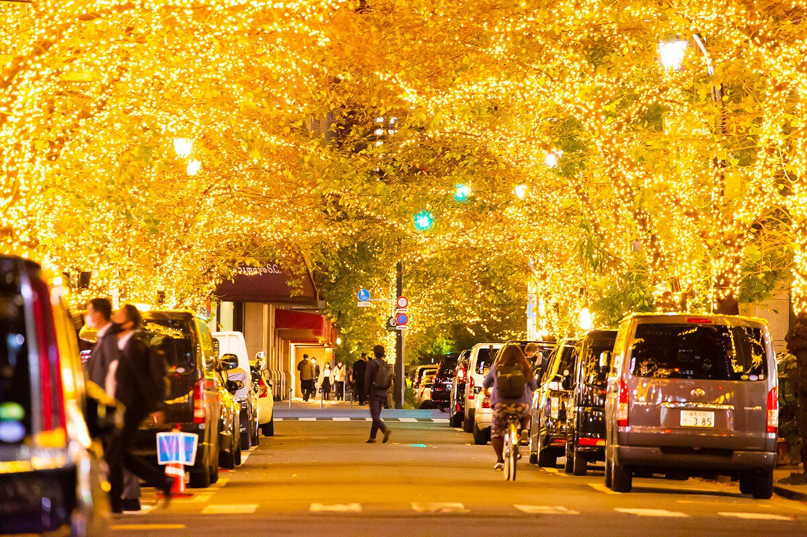

気温: 読み込み中...
取得時間: 読み込み中...

- 江戸の始まりの新開地を灯すイルミネーション -
| Info | |
|---|---|
| ⌚開催期間 | 2024年11月6日(水)～2025年2月14日(金) |
| 💡ライトアップ時間 | 16:30～23:30 |
| 💰費用 | 入場無料 |
| 🚆最寄駅 |
JR「東京駅」 東京メトロ 銀座線・東西線「日本橋駅」 都営地下鉄 浅草線「日本橋駅」 |
| 📍場所 | さくら通り（外堀通り～昭和通り）、八重洲仲通り |
※外部サイトへリンクします